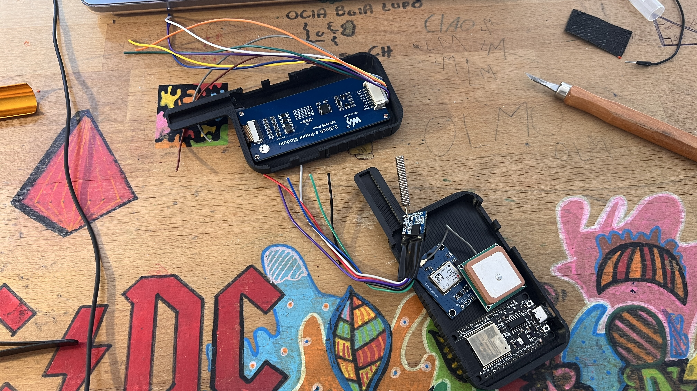
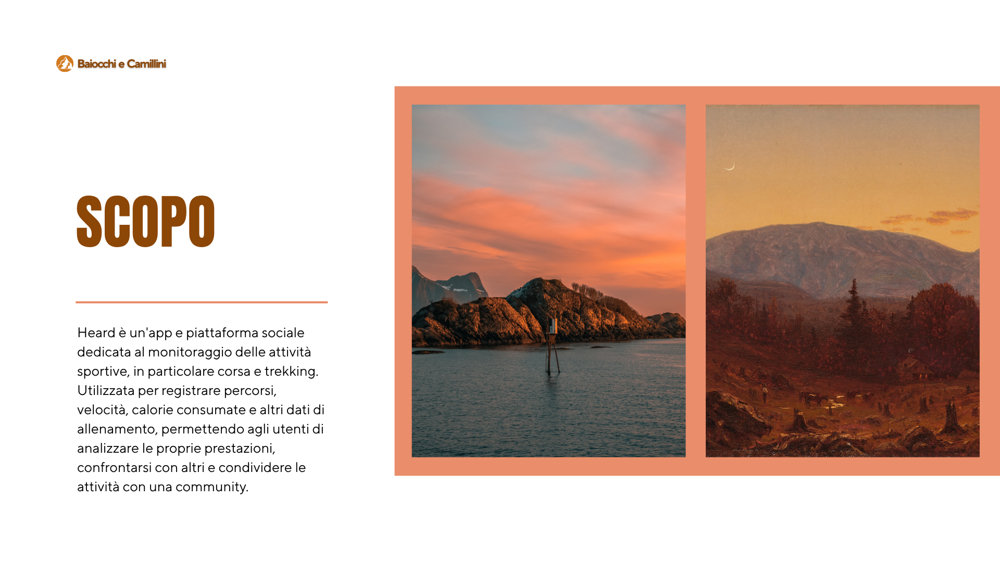
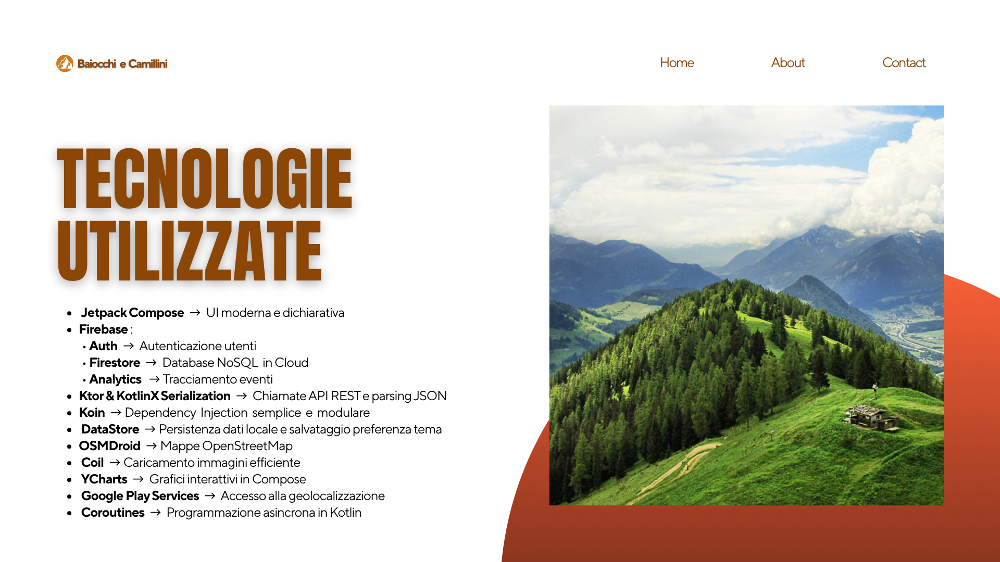

HEARD — the thesis
The first working version of my off-grid group-safety idea, built from radios, GPS modules, and many breadboard wires
Where it started
HEARD began as my bachelor's thesis and a simple hiking problem: once a group spreads out beyond shouting distance, phones are not a dependable way to know whether everyone is still together. I built a set of embedded devices that share positions over LoRa, check the planned route locally, and surface problems without relying on mobile coverage.
What I wanted it to do
- Enable long-range communication without cellular networks
- Support real-time position sharing among group members
- Detect off-route deviations automatically
- Provide emergency triggering and fast alert propagation

System Architecture
The device ecosystem is composed of three embedded units:
- Heard Core: the group leader’s device, responsible for route creation, synchronization, and global monitoring.
- Heard Node: a compact device for adults, capable of transmitting positions and receiving alerts.
- Heard Pico: a minimal emergency-only device, ideal for children.
Communication Layer
The devices communicate via LoRa, enabling effective long-distance messaging (up to several kilometers). A hybrid communication model allows both direct broadcasting and multi-hop message propagation.





Mobile Application
As an extension of the HEARD system, the mobile application provides a modern interface for viewing group activity, managing routes, and monitoring safety events in real time.
Main Features
- Display of group members’ positions on local offline maps
- Visualization of route progress and safety alerts
- Integration with embedded devices for real-time updates

